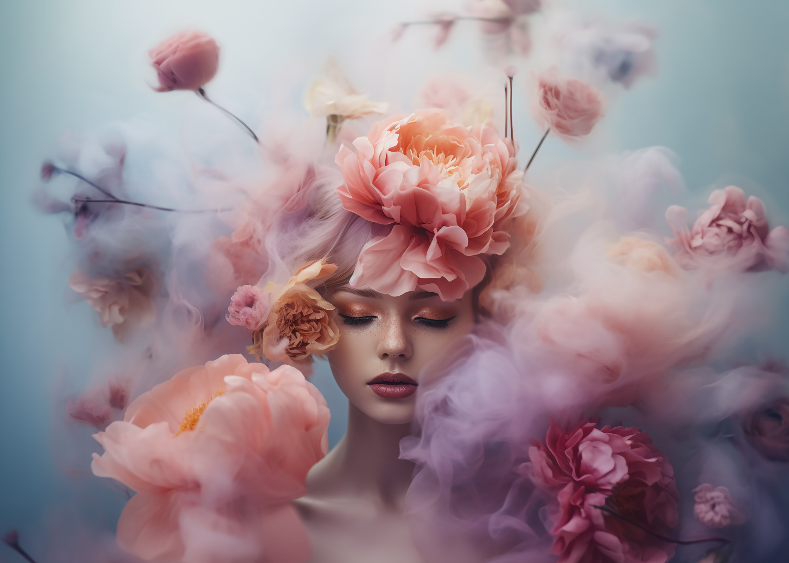
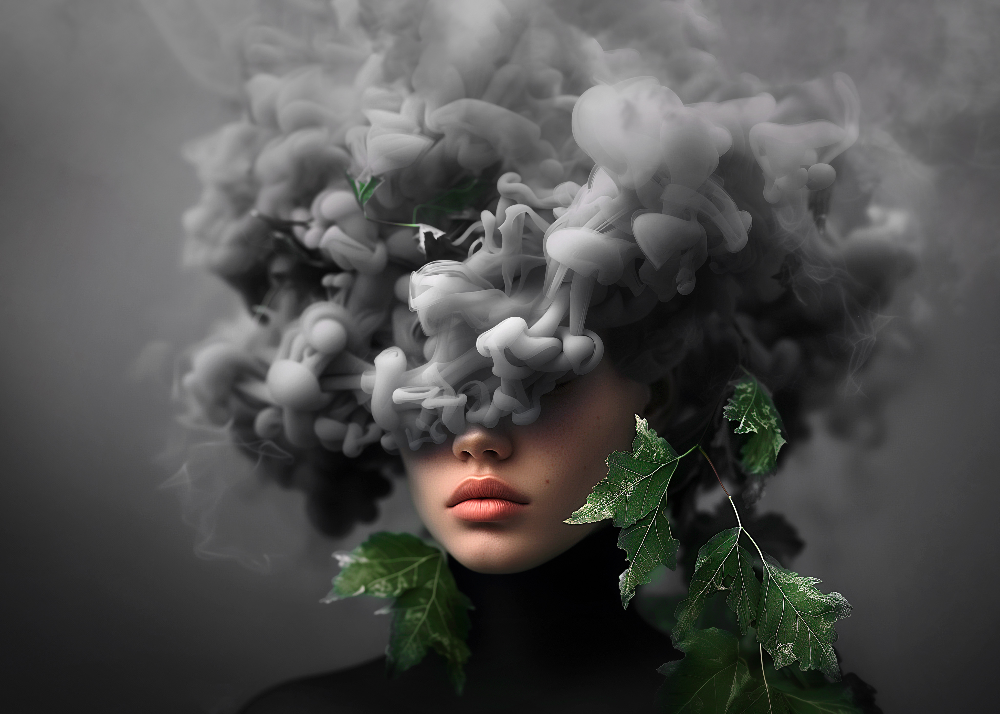

As an AI image creator, I use Midjourney to generate mostly women's portraits. Those are
not just simple portraits, but I try them to be unique in some way. I tend to add smoke and flowers to my
portraits. When I generate an image that is aligned with my vision of how it should look like, I master it
in Photoshop, adjusting colours, shapes and sometimes adding more elements to it. Some of the final pieces
are displayed on my instagram account.

